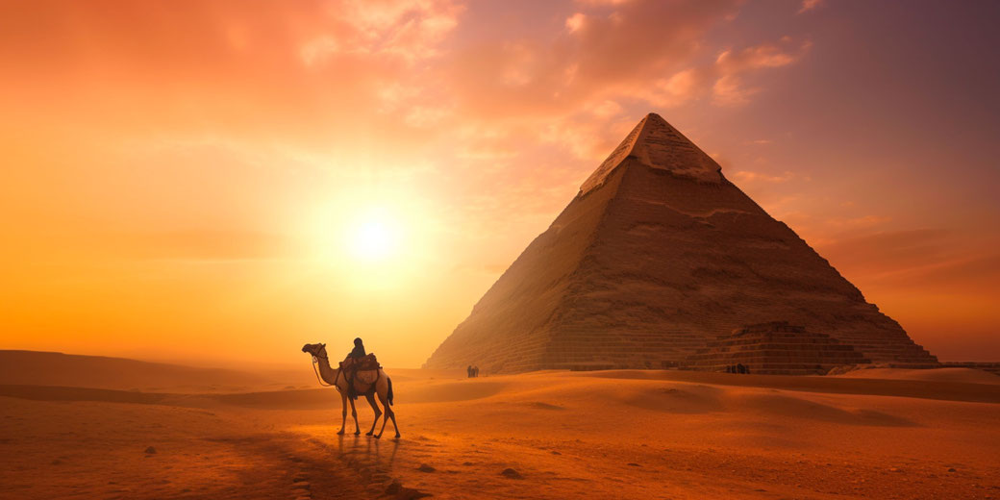
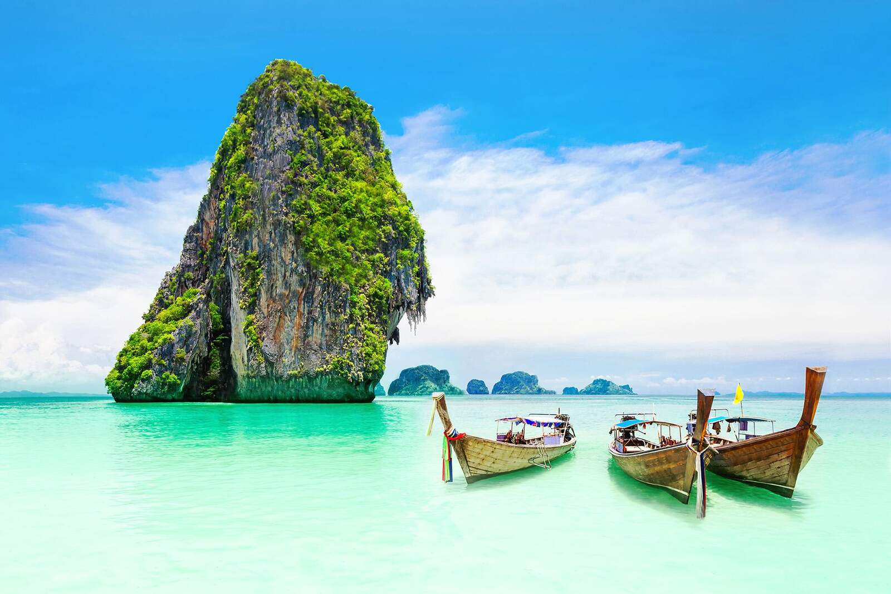
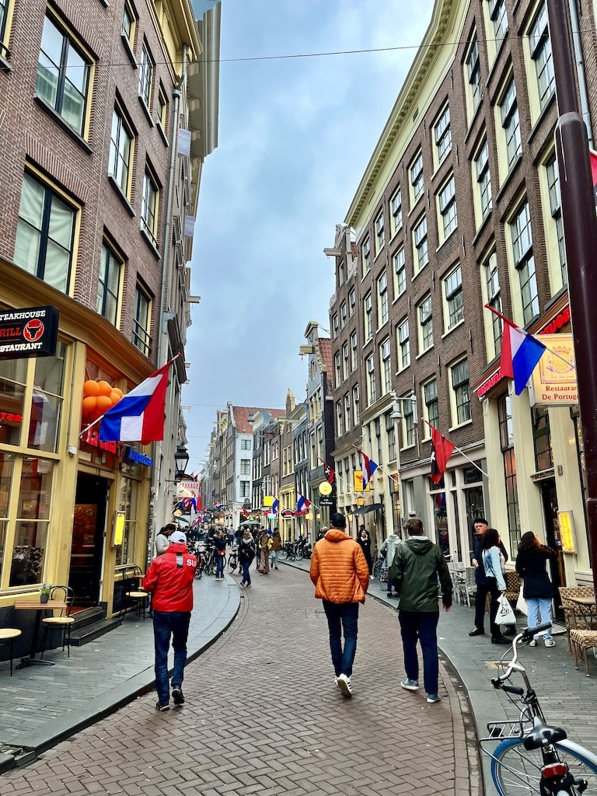
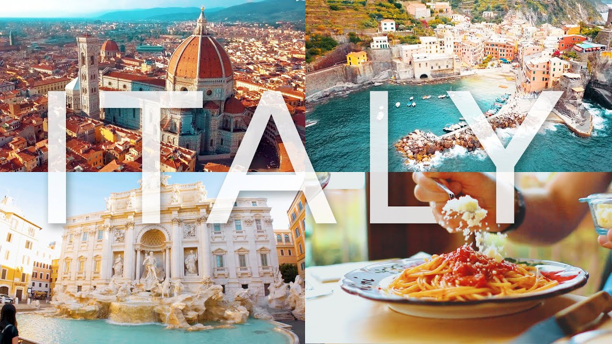
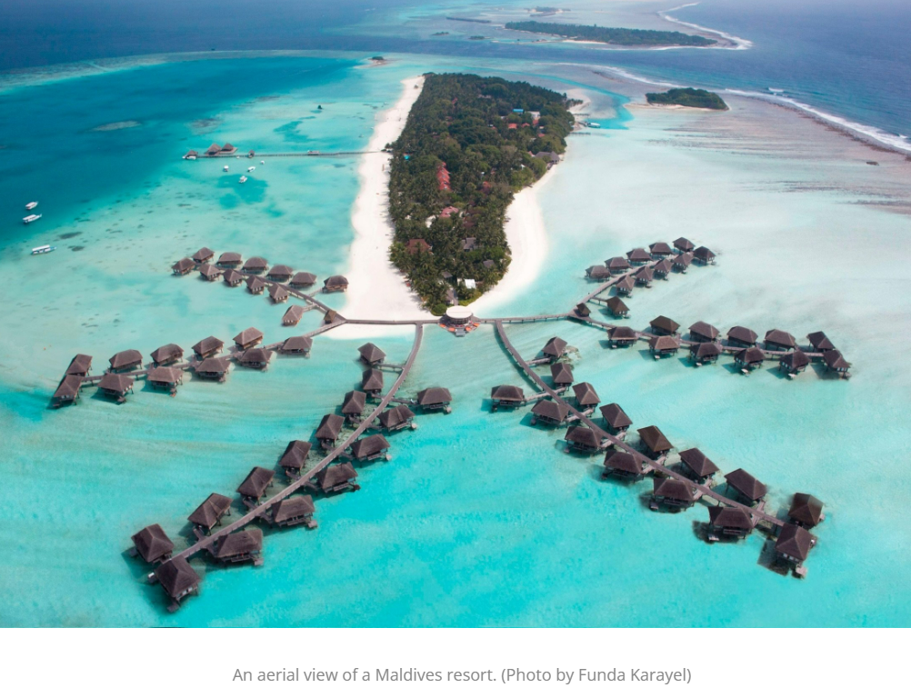
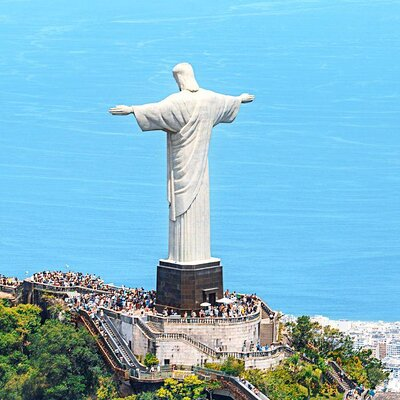

Top 10 holiday destinations around the world
10. USA
The United States has many travel destinations, including cities like New York, national parks, and other attractions.
9. Costa Rica
Costa Rica is known for its natural beauty, diverse landscapes, and outdoor activities. Its also known for its peacefulness, polical stability, and commitment to environmental conservation.
8. Egypt

Egypt is a very special place to visit because of its ancient history, monuments, and natural beauty.
7. Thailand

Thailand is a very special place to visit because of its rich history, beautiful beaches, and vibrant culture.
6. Amsterdam

Amsterdam is home to some of the world's most famous museums. Its also famous for a plethora of hotels, pubs, and events.
5. Italy

Tourists and travel experts have long agreed that Italy is a special place, so much so that the country has become a de facto bucket list destination for just about everyone. Famous for its incredible food, rich historical sites, highly regarded art, charming small towns and picturesque cities, countrysides and coastlines, Italy and its offerings are unmatched - Alissa Grisler
4. Maldives

Maldives is a popular destination for its white sandy beaches, turquoise waters, and vibrand marine life. It's also known for its year-round good weather.
3. France
France is popular destination for travelers because of its rich history, beautiful country side, and world-famous landmarks, like the Eiffel Tower.
2. Brazil

An eclectic mix of people, culture, and stunning landscapes, all combined into one vibrant and captivating destination. This is where the forests and rivers hide the greatest biodiversity on the planet; this is where the most lively cities will capture your heart. - TourHero
1. South Africa

From incredible Big 5 game viewing and pristine beaches to rich cultures and superb value for money. - Louis Nel from go2africa